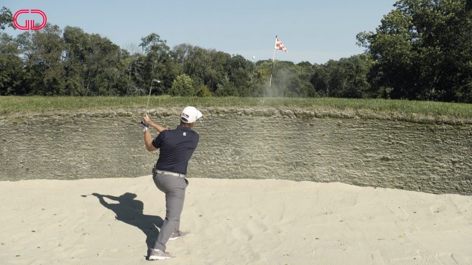

I started playing golf when I was very young. My dad played it, my mom played it and my brother played it. And as the youngest in the family, I was extremely competitive. I would spend hours on hours on the range trying to get better, before I eventually stopped before high school to focus on Lacrosse. However, now that I’ve slowed down on Lacrosse over college, I’ve been able to pickup the sport once again, and that drive returned. As I had taken some time off, I was terrible compared to my friends, and they let me know it. So, over the last two years I’ve been practicing and playing as much as I can in order to beat them. And, I am happy to say, I finally have, by lowering my score 20+ strokes from 2 years prior. The main issue I see with most golfers my age, is that when there scores are high, they go to the range and practice the same things over and over again. However, as the saying goes “DRIVE FOR SHOW AND PUTT FOR DOUGH.” While this statement is not entirely accurate, it does highlight the existence of some sort of ego-boost, which people focus too heavily on.
In order to lower your scores, amateur golfers should mainly focus on their short game When Tiger Woods was growing up, his father took the opposite approach to most parents and taught him to putt, chip, and get out of the sand first, before teaching him how to swing. Tiger says that starting from the green and moving out was one of the many reasons he was able to succeed at such a young age; since he was better than nearly everyone around the green. While it also helps to be the arguably best driver of all time, many can hit it as far as him, yet are nowhere as near as successful
When I was struggling to catch-up to my friends in golf, I would spend hours trying to fix my driver swing and hit it further to at least repair my shattered ego. When eventually my father pointed out that that’s not where I’m losing strokes, rather the green. So as many do, I went and watched the pros, and how they work the green, and realized there is much more to it than meets the eye. Phil Mickelson, one of best chippers of all time, released a few youtube shorts about positioning the ball and envisioning what youre doing before you do it. If you want to fly the ball push the ball more forward in your stance and open your hands to make the club make contact at a very angle. In order to control the ball low, do the opposite, and move the ball back and close them. While this may seem elementary at first, you’d be surprised about how many golfers setup the same everywhere, and use the hit and pray tactic.
When approaching the sand, one of the biggest mistakes is approaching it as any other shot; it’s not. Depending on your distance, most of the time, you should open up your stance, open your hands, and try to slap the head of the club a few inches behind the ball. Recognizing the distinct nature of bunker shots and adapting the technique accordingly became a game-changer for me, minimizing the intimidation factor associated with sandy hazards.
The journey to consistently break 80 in golf is a testament to the nuanced understanding of the game's intricacies. Learning from the experiences of golfing legends such as Tiger Woods and Phil Mickelson reveals that mastery in golf extends beyond the power-packed drives to the finesse of the short game. Their emphasis on putting, chipping, and sand play as foundational skills resonates deeply with those seeking to reach the elusive sub-80 scores. In the pursuit of this elusive goal, players discover that success in golf is not just measured by numbers but by the intricate dance between skill and mentality. The realization that each shot around the green demands a unique strategy reshapes the narrative of golfing triumph. It is in this ongoing journey to break 80 that golfers find a source of continual inspiration, a journey that mirrors life's complexities, pushing boundaries, and uncovering the enduring joy found in mastering the game.